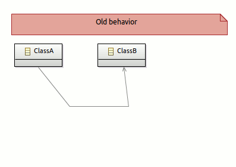
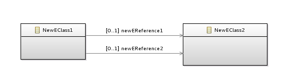
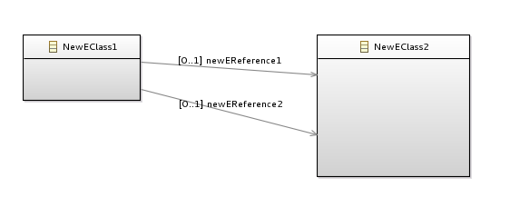
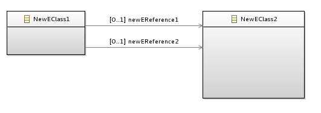

This document contains the release notes for recent major releases of Sirius. See also the release notes from previous versions for details about older releases.
org.eclipse.sirius.common.acceleo.aql (required for evaluating the expressions) and
org.eclipse.sirius.common.acceleo.aql.ide (optional, only needed to provide specification-time features like expression completion). AQL is similar to Acceleo 3/MTL, but simpler and provides much better performance in the Sirius context.
*.svgz) are now supported everywhere normal SVG images were supported.
service: or
aql: can now invoke Java services which are defined in the workspace (with no need to launch a separate runtime).
var: and
feature: interpreters, which are always present.
[eContents()->size()/]) in the VSM, that was implicit before. Customers who want to completely remove this dependency must remove the Acceleo 3 expressions from there VSM after the migration.
*" can now be used as feature name of a table’s
Feature Column to skip the feature name validation during the cell creation. This allow to compute the label of cells for lines whose semantic element types have no common
EStructuralFeature (inherited or with same name).
The most important and impacting changes in this release are (details below in plug-in specific sections):
org.eclipse.sirius.ui.siriuspropertiescelleditor, defined in
org.eclipse.sirius.ui, can be used to provide customized cell editors for semantic element’s properties as shown in the properties view on a Sirius representation.
org.eclipse.sirius.eef.components.SiriusAwarePropertiesEditingComponent can be used as root class of the generated EEF components to greatly improve performances when using both EEF properties views with Sirius representations.
org.eclipse.sirius.eef.adapters is now 1.5.0 (from 1.2 before). EEF 1.5 is source and binary-compatible with EEF 1.2 to 1.4, and no re-generation of the EEF views should be needed to switch to 1.5.
org.eclipse.sirius.business.internal.session.IsModifiedSavingPolicy saving policy, introduced in Sirius 2.0.0 but not enabled there is now the default. The previous implementation,
org.eclipse.sirius.business.api.session.SavingPolicyImpl is still available if needed.
MinimalEObjectImpl.Container as base class, which reduces memory consumption compared to previous versions.
RGBValues type used in Sirius to represent colors has been converted into an immutable EMF EDataType, which also reduces memory consumption compared to previous versions.
AirdResourceImpl type, use for the
*.aird resources, no longer inherits from GMF’s
GMFResource or depend on GMF in any way. This makes the
org.eclipse.sirius now completely independent on GMF.
DAnalsysis.models reference has been replaced by the
DAnalsysis.semanticModels attribute, in conjunction with the new
ResourceDescriptor data-type. The
DAnalysis.getModels() Java method is still present for compatibility and returns the same values, but the returned list can not be modified. All changes must be made directly on
DAnalsysis.semanticModels and will be reflected in the value returned by
DAnalysis.getModels(). While not technically deprecated yet,
DAnalysis.getModels() should be avoided and may be removed in a future release.
plugin.xml that provide UI functionalities have been moved to
org.eclipse.sirius.table.ui.ext to make the contributions to the UI optional. If your product consumed directly the Sirius plug-ins instead of the high-level features, you may need to add the new plug-ins if you want the Sirius UI contributions to stay available.
AirDCrossReferenceAdapterImpl, which was a subclass of GMF’s
CrossReferenceAdapter on session resources (
*.aird). If your code relied on GMF’s implementation to find inverse references, it can use the Sirius session’s
Session.getSemanticCrossReferencer() instead, which provides the same service (and more) and avoids the redundant installation of GMF’s version.
Packaging changes:
org.eclipse.sirius.runtime.aql includes the minimum required to execute AQL queries at runtime. It must be present on end-users' systems for modelers which use AQL expressions to work.
org.eclipse.sirius.aql includes both the runtime requirements and the development-time features like support for auto-completion of AQL expressions in the VSM editor.
org.eclipse.sirius.specifier includes everything needed to have a complete Sirius specification environment, with support for all dialects. It includes support for Acceleo 3/MTL queries, but not for AQL (provided by
org.eclipse.sirius.aql) or OCL (provided by
org.eclipse.sirius.runtime.ocl). Future Sirius releases will probably swap AQL and Acceleo 3, making AQL the defaut and part of the main feature, and Acceleo 3/MTL optional in a separate feature.
http://download.eclipse.org/sirius/updates/releases/2.0.5/. This is retro-active on all previously released versions of Sirius, but not on milestones before 3.0.0.
Other changes:
org.eclipse.sirius.common
org.eclipse.sirius.common.tools.api.util.SiriusCrossReferenceAdapter interface and the
org.eclipse.sirius.common.tools.api.util.SiriusCrossReferenceAdapterImpl have been added to have the capability to disable the proxy resolution. This feature is typically used to prevent loading a resource during its unloading.
Warning :
Every additional custom CrossReferenceAdapter should extend
SiriusCrossReferenceAdapterImpl or at least implement
SiriusCrossReferenceAdapter with the same implementation as
SiriusCrossReferenceAdapterImpl.
org.eclipse.sirius.common.tools.api.util.ECrossReferenceAdapterWithUnproxyCapability is a specific kind of
SiriusCrossReferenceAdapter. It provides the capability to resolve all proxy cross references to a given resource. It is now used by the Session as semantic cross referencer. This type is exposed as API but it is not intended to be used/referenced/extended by user code (as the below
LazyCrossReferencer type).
org.eclipse.sirius.common.tools.api.util.ReflectionHelper.getFieldValueWithoutException(Class<?>, String) has been added to return an internal static value of a class.
org.eclipse.sirius.common.tools.api.resource.ResourceSetSync has a new state
CHANGES_CANCELED used to define the state where the user canceled its changes.
org.eclipse.sirius.common.tools.api.resource.ImageFileFormat class has been added (it was in
org.eclipse.sirius.ext.swt before).
org.eclipse.sirius.common.tools.api.util.EclipseUtil.getConfigurationElementsFor() has been added: it calls
org.eclipse.core.runtime.Platform.getExtensionRegistry().getConfigurationElementsFor() only if
Platform.isRunning().
org.eclipse.sirius.business.api.migration.IMigrationParticipant exposes a new method
postXMLEndElement([..]) which is called during a migration operation. This method should be overridden by participants which have to hook the loading process after each end of XML tag. The corresponding abstract class
org.eclipse.sirius.business.api.migration.AbstractMigrationParticipant provides a default empty implementation.
org.eclipse.sirius.common.tools.api.interpreter.JavaExtensionsManager can now be used by langages interpreters to benefit from a consistent handling of Java extensions and support for loading Java services from the workspace.
org.eclipse.sirius.common.tools.api.interpreter.TypeName has been introduced to represent in the codebase any type which was previously represented as a plain String.
org.eclipse.sirius.common.tools.api.interpreter.TypedValidation has been introduced for
IInterpreter implementations able to provide richer information when validating an expression. This information is captured through a
org.eclipse.sirius.common.tools.api.interpreter.ValidationResult instance.
org.eclipse.sirius.common.tools.api.interpreter.VariableType has been introduced to represent the possible types a variable can have in a Viewpoint specification model.
org.eclipse.sirius.common.tools.api.interpreter.IInterpreterContextUtils has been introduced to factorize code related to managing
IInterpreterContext instances.
org.eclipse.sirius.business.api.dialect.description.MultiLanguagesValidator has been introduced to provide a safe and more efficient way to switch to the proper
IInterpreter instance when validating expressions.
org.eclipse.sirius.common.tools.api.util.RefreshIdFactory has been replaced with
org.eclipse.sirius.common.tools.api.util.RefreshIdsHolder which no longer rely on a global singleton but attach information to an EObject representing the current scope. This impacts
org.eclipse.sirius.diagram.business.api.query.AbstractDNodeQuery ,
org.eclipse.sirius.common.tools.api.util.CartesianProduct and
org.eclipse.sirius.common.tools.api.util.EObjectCouple which are now requiring now a
RefreshIdsHolder instance.
org.eclipse.sirius.common.tools.api.util.LazyCrossReferencer now extends
ECrossReferenceAdapterWithUnproxyCapability and implements
resolveProxyCrossReferences(Resource).
org.eclipse.sirius.common.tools.api.util.LazyCrossReferencer.enableResolve() and
disableResolve() methods has been moved to
SiriusCrossReferenceAdapter.enableResolveProxy() and
disableResolveProxy().
org.eclipse.sirius.common.tools.api.interpreter.DefaultInterpreterContextFactory.createInterpreterContext(...) now requires a
Map<String, VariableType> for the accessible variables instead of a
Map<String, String>.
org.eclipse.sirius.common.tools.api.interpreter.IInterpreterContext.getVariables() and
org.eclipse.sirius.business.api.dialect.description.IInterpretedExpressionQuery.getAvailableVariables() are now returning a map containing
VariableType instances instead of encoded Strings.
org.eclipse.sirius.common.tools.api.interpreter.IInterpreterStatus.getTargetTypes() no longer returns a list of encoded Strings but a
VariableType instance instead.
org.eclipse.sirius.common.tools.api.interpreter.IInterpreterContext.getTargetTypes() has been deprecated in favor of
org.eclipse.sirius.common.tools.api.interpreter.IInterpreterContext.getTargetType() which returns a
VariableType instance instead of encoded Strings.
org.eclipse.sirius.common.ui
org.eclipse.sirius.common.ui.tools.api.dialog.quickoutline packages are available in API to allow editor to provide quick outline feature easily.
plugin.xml that provide UI functionalities have been moved to
org.eclipse.sirius.common.ui.ext.
org.eclipse.sirius
org.eclipse.sirius.business.api.session.danalysis.DAnalysisSessionHelper.findContainerForAddedRepresentation(DAnalysis, DRepresentation) has been added to return a
DRepresentationContainer from the
DAnalysis parameter and the added
DRepresentation.
org.eclipse.sirius.business.api.migration.IMigrationParticipant.updateCreatedObject(EObject newObject, String loadedVersion) has been added to update object values in VSM before loading this objects from XML file.
org.eclipse.sirius.tools.api.ui.RefreshEditorsPrecommitListener.disable() has been added to disable the next refresh attempt in the current precommit loop iteration.
org.eclipse.sirius.business.api.helper.SiriusUtil.ENVIRONMENT_URI_SCHEME declares environment URI scheme.
org.eclipse.sirius.business.api.helper.SiriusUtil.VIEWPOINT_ENVIRONMENT_RESOURCE_URI declares
environment:/viewpoint resource URI.
org.eclipse.sirius.viewpoint.description.util.DescriptionResourceImpl.OPTION_SIRIUS_USE_URI_FRAGMENT_AS_ID added to define a option to enable the use of a id map for odesign resource, id being uri’s fragment.
org.eclipse.sirius.business.api.query.EObjectQuery has now a new constructor with an additional parameter, ECrossReferenceAdapter. This can be usefull if there is many calls to inverse references methods for the same Session. This avoids to get the semantic cross referencer from the EObject each time. This query also proposes a new method
getInverseReferences(Set<EReference>).
org.eclipse.sirius.business.api.dialect.DialectServices.refreshImpactedElements(DRepresentation, Collection<Notification>, IProgressMonitor). A default implementation that does nothing is done in
org.eclipse.sirius.business.api.dialect.AbstractRepresentationDialectServices.
org.eclipse.sirius.business.api.query.DAnalysisQuery named
getMainModels(). This method returns a Set of the main model and the other non controlled models.
org.eclipse.sirius.viewpoint.DAnalysis named
getSemanticResources(). This method returns a list of
org.eclipse.sirius.business.api.resource.ResourceDescriptor which is a descriptor of the semantic resource.* Modified
org.eclipse.sirius.viewpoint.RGBValues has been changed from an
EClass to an
EDataType, it is not an
EObject anymore.
org.eclipse.sirius.business.api.metamodel.helper.FontFormatHelper has been added. It helps to update label format multi valued features.
org.eclipse.sirius.business.api.session.SessionListener.SEMANTIC_CHANGE is no more send to
SessionListener and
SessionManagerListener listeners on save when a semantic resource is saved. Use a
ResourceSyncClient listener on
ResourceSetSync to have know if a semantic resource is saved.
org.eclipse.sirius.tools.api.command.semantic.RemoveSemanticResourceCommand.
removeReferencingResources has been added to indicate if the referencing resources are also to remove.
removeFromControlledResources has been removed because controlled resources are managed internally.
removeReferencingResources has been added in
org.eclipse.sirius.business.api.session.Session.removeSemanticResource method to indicate if the referencing resources are also to remove.
getModels() method in
org.eclipse.sirius.viewpoint.DAnalysis returns a non-modifiable list. Use
getSemanticResources() instead.
isBbocked() and
setBlocked() methods on the
org.eclipse.sirius.viewpoint.DAnalysisSessionEObject EClass have been removed, as they were not actually used in the internal code.
org.eclipse.sirius.business.api.helper.task.ICommandTask.undo()/redo() methods are deprecated because they are useless since undo/redo is managed by EMF Transaction.
org.eclipse.sirius.tools.api.command.IUndoableCommand interface are deprecated because it is useless since undo/redo is managed by EMF Transaction.
org.eclipse.sirius.business.api.helper.task.TaskExecutor.undo()/redo() methods are deprecated because they are useless since undo/redo is managed by EMF Transaction.
org.eclipse.sirius.business.api.session.Session.createSemanticResource() method has been removed. Use
Session.addSemanticResource() instead.
ExtendedPackage
EDataType which was defined in the
http://www.eclipse.org/sirius/1.1.0 package was not actually used anywhere and has been removed.
DView methods
getAllRepresentations(),
getReferencedRepresentations() and
getHiddenRepresentations() have been removed:
getReferencedRepresentations() and
getHiddenRepresentations() were never actually used, making
getAllRepresentations() strictly equivalent to
getOwnedRepresentations(). Code that used
getAllRepresentations() can simply use
getOwnedRepresentations() instead.
org.eclipse.sirius.viewpoint.DSourceFileLink has been removed.
org.eclipse.sirius.viewpoint.DNavigable has been removed.
org.eclipse.sirius.viewpoint.DNavigationLink has been removed.
org.eclipse.sirius.viewpoint.DValidable has been removed.
org.eclipse.sirius.viewpoint.NavigationTargetType has been removed.
org.eclipse.sirius.viewpoint.DLabelled has been removed.
org.eclipse.sirius.viewpoint.DContainer has been removed.
org.eclipse.sirius.ui
org.eclipse.sirius.ui.business.api.dialect.DialectUIServices.completeToolTipText(String, EObject, EStructuralFeature) has been added to customize the tooltip displayed in the VSM editor by using the feature of the current object. The old method
org.eclipse.sirius.ui.business.api.dialect.DialectUIServices.completeToolTipText(String, EObject) has been deprecated.
org.eclipse.sirius.ui.tools.api.properties.SiriusExtensiblePropertySource has been added. It allows developers to make their properties views CellEditor customizable by using the new extension point
org.eclipse.sirius.ui.siriuspropertiescelleditor
org.eclipse.sirius.ext.emf.ui.ICellEditorProvider has been added to allow clients to provide their own
CellEditor - in the Sirius semantic properties views – through the new extension point
org.eclipse.sirius.ui.siriuspropertiescelleditor.
org.eclipse.sirius.ui.business.api.session.IEditingSession.detachEditor(DialectEditor, boolean) has been added to choose whether we should revert the user changes when detaching the editor.
org.eclipse.sirius.ui.tools.api.views.LockDecorationUpdater is now available to add it on a
org.eclipse.ui.navigator.CommonNavigator to be refreshed when notifications are send to
org.eclipse.sirius.ecore.extender.business.api.permission.IAuthorityListener.
org.eclipse.sirius.ui.tools.api.views.RefreshLabelImageJob has been added to refresh the icon of specified elements on a
org.eclipse.ui.navigator.CommonNavigator.
plugin.xml that provide UI functionalities have been moved to
org.eclipse.sirius.ui.ext.
org.eclipse.sirius.ecore.extender
org.eclipse.sirius.ecore.extender.business.api.accessor.ModelAccessor.eRemoveInverseCrossReferences() has been changed to return the list of changed objects by the inverse cross references removal.
org.eclipse.sirius.ecore.extender.business.api.accessor.IMetamodelExtender.eRemoveInverseCrossReferences() has been changed to return the list of changed objects by the inverse cross references removal.
org.eclipse.sirius.ecore.extender.business.api.accessor.CompositeMetamodelExtender.eRemoveInverseCrossReferences() has been changed to return the list of changed objects by the inverse cross references removal.
org.eclipse.sirius.ecore.extender.IllegalURIException has been removed. It was not actually thrown anywhere in the code.
org.eclipse.sirius.editor
org.eclipse.sirius.editor.tools.api.assist.TypeContentProposalProvider.bindPluginsCompletionProcessors(AbstractPropertySection, Text) has been added. This method is very similar to
org.eclipse.sirius.editor.tools.api.assist.TypeContentProposalProvider.bindCompletionProcessor(AbstractPropertySection, Text), the difference is that it binds the completion processors available in plugins to the text.
org.eclipse.sirius.diagram
org.eclipse.sirius.diagram.tools.api.command.ChangeLayerActivationCommand has been added. This command was previously internal.
org.eclipse.sirius.diagram.business.api.helper.SiriusDiagramUtil.DIAGRAM_ENVIRONMENT_RESOURCE_URI declares the
environment:/diagram resource URI.
org.eclipse.sirius.diagram.business.api.diagramtype.IDiagramDescriptionProvider.completeToolTipText(String, EObject, EStructuralFeature) has been added to customize the tooltip displayed in the VSM editor by using the feature of the current object. The old method
org.eclipse.sirius.diagram.business.api.diagramtype.IDiagramDescriptionProvider.completeToolTipText(String, EObject) has been deprecated.
org.eclipse.sirius.diagram.business.api.query.ContainerMappingQuery to test the children presentation mode of the current
ContainerMapping:
isVerticalStackContainer(),
isHorizontalStackContainer(),
isRegionContainer() and
isRegion().
org.eclipse.sirius.diagram.business.api.query.AbstractDNodeQuery now requires a
org.eclipse.sirius.common.tools.api.util.RefreshIdsHolder to check for equality in the context of a refresh operation.
DNodeList.lineWidth attribute has been removed from the metamodel, the corresponding generated elements do not exist anymore:
org.eclipse.sirius.diagram.DNodeList.getLineWidth(),
org.eclipse.sirius.diagram.DNodeList.setLineWidth(),
org.eclipse.sirius.diagram.DiagramPackage.DNODE_LIST__LINE_WIDTH,
org.eclipse.sirius.diagram.DiagramPackage.getDNodeList_LineWidth(),
org.eclipse.sirius.diagram.DiagramPackage.Literals.DNODE_LIST__LINE_WIDTH().
org.eclipse.sirius.diagram.ComputedStyleDescriptionRegistry.cache reference has been removed from the metamodel as it is no more useful, to limit memory consumed by computed
StyleDescription we directly look for them in the
ComputedStyleDescriptionRegistry.computedStyleDescriptions list.
org.eclipse.sirius.diagram.ui
org.eclipse.sirius.diagram.ui.tools.api.figure.ImageFigureWithAlpha interface has been added to identify Figures having the capability to return an alpha value from a coordinate.
org.eclipse.sirius.diagram.ui.tools.api.figure.AbstractCachedSVGFigure and
org.eclipse.sirius.diagram.ui.tools.api.figure.AbstractTransparentImage now implement this new interface.
org.eclipse.sirius.diagram.ui.tools.api.figure.locator.DBorderItemLocator.resetBorderItemMovedState() has been added to allow to reset the state of
borderItemHasMoved. This method must be used carefully only in case where
setConstraint(Rectangle) is called to compute temporary a
getValidLocation(Rectangle, IFigure, Collection, List), one time with a new value and just after with the old value.
org.eclipse.sirius.diagram.ui.tools.api.image.DiagramImagesPath.HIDDEN_LABEL_DECORATOR has been added to represent the path of hidden label decorator used in the outline.
org.eclipse.sirius.diagram.ui.business.api.provider.DDiagramElementContainerLabelItemProvider has been added to represent container and list labels as virtual nodes in the Show/Hide wizards.
org.eclipse.sirius.diagram.ui.tools.api.figure.locator.DBorderItemLocator did not take into account the rectangle size passed to
getValidLocation. To resolve that limitation, several protected methods that took a Point as location now take a Rectangle:
locateOnBorder(Point, int, int, IFigure, Collection<IFigure>, List<IFigure>) now takes a
Rectangle instead a
Point:
locateOnBorder(Rectangle, int, int, IFigure, Collection<IFigure>, List<IFigure>);
locateOnSouthBorder,
locateOnNorthBorder,
locateOnWestBorder and
locateOnEastBorder signatures is now
(Rectangle, int, IFigure, Collection<IFigure>, List<IFigure>);
locateOnParent signature is now
locateOnParent(Rectangle, int, IFigure);
conflicts signature is now
conflicts(Rectangle, IFigure, Collection<IFigure>, List<IFigure>).
DiagramImagesPath.LINK_TO_VIEWPOINT_IMG has been moved to
org.eclipse.sirius.ui.tools.api.image.ImagesPath.LINK_TO_VIEWPOINT_IMG. This is more coherent because the corresponding image is in core
org.eclipse.sirius.common.ui plugin.
org.eclipse.sirius.diagram.ui.tools.api.layout.PinHelper moved from
org.eclipse.sirius.diagram.ui plugin to
org.eclipse.sirius.diagram plugin, i.e.
org.eclipse.sirius.diagram.tools.api.layout.PinHelper with
PinHelper.IsPinned(IDiagramElementEditPart) removed in favor of
PinHelper.IsPinned(DDiagramElement).
org.eclipse.sirius.diagram.ui.tools.internal.actions.pinning.pinElementsActionId and
org.eclipse.sirius.diagram.ui.tools.internal.actions.pinning.unpinElementsActionId are now declared as
org.eclipse.sirius.diagram.tools.internal.actions.pinning.pinElementsActionId and
org.eclipse.sirius.diagram.tools.internal.actions.pinning.unpinElementsActionId in
org.eclipse.sirius.diagram plugin.
plugin.xml that provides UI functionalities have been moved to
org.eclipse.sirius.diagram.ui.ext.
org.eclipse.sirius.diagram.ui.tools.api.util.GMFNotationHelper.findGMFDiagram() became deprecated in favor of
DiagramCreationUtil.findAssociatedGMFDiagram()/getAssociatedGMFDiagram()
org.eclipse.sirius.diagram.ui.edit.api.part.IDiagramEdgeEditPart.getEAdapterStrokeColor method has been removed as the corresponding adapter was uneffective and is no more used and installed on the edge edit parts.
org.eclipse.sirius.diagram.ui.tools.api.figure.InvisibleResizableCompartmentFigure class has been removed, use a
org.eclipse.gmf.runtime.diagram.ui.figures.ShapeCompartmentFigure with a
org.eclipse.draw2d.MarginBorder or a null border instead.
org.eclipse.sirius.diagram.ui.edit.api.part.IDiagramElementEditPart.getEAdapterSemanticElements() has been removed (and all its implementations). For manual refresh, this adapter has been replaced with the
RefreshEditorsPrecommitListener.
org.eclipse.sirius.diagram.ui.part.SiriusDiagramEditorUtil.findView() has been deleted in flavor of
SiriusGMFHelper.getGmfView(). If you was using
SiriusDiagramEditorUtil.findView() with a semantic element in parameter, retrieve before the corresponding
DDiagram or
DDiagramElement and use
SiriusGMFHelper.getGmfView(DSemanticDecorator) from this last to get the corresponding GMF View. To get a
DDiagram or
DDiagramElement from a semantic element, you can use
EObjectQuery.getInverseReferences(EReference) API, see
org.eclipse.sirius.diagram.ui.business.api.view.ValidateAction.getDSemanticDecorator() for an example.
org.eclipse.sirius.table
org.eclipse.sirius.table.business.api.helper.TableHelper.getColumn() have been removed because they are not useful,
TableHelper.getColumn(DLine, int) can be replaced by
DTable.getColumns().get(int) and
TableHelper.getColumn(DTable, String) should not be used as we can have several columns with a same featureName.
org.eclipse.sirius.table.business.api.helper.TableHelper.getEClassifier(DLine, int) has been removed because it is not useful, use
TableHelper.getEClassifier(line, column) instead.
org.eclipse.sirius.table.business.api.helper.TableHelper.getTableElement(DTableElementStyle) has been removed because it is not useful,
DTableElementStyle.eContainer() can be used instead.
org.eclipse.sirius.table.business.api.helper.TableHelper.getCell(DCellStyle) has been removed because they are not useful, use
DCellStyle.eContainer instead.
org.eclipse.sirius.table.business.api.helper.TableHelper.getCell(RGBValues) has been removed,
RGBValues is not an
EObject anymore. The method was looking in the eContainer hierarchy of a an instance of
RGBValues to find the parent
DCell.
org.eclipse.sirius.table.business.api.helper.TableHelper.getCreateCellTool(DCell) has been removed because it is not useful, use
TableHelper.getCreateCellTool(line, column) instead.
org.eclipse.sirius.table.business.api.helper.TableHelper.getCellDefaultForegroundColor() has been removed because it is not useful, use
EnvironmentSystemColorFactory.getDefault().getSystemColorDescription("gray") instead.
DTableElementUpdater has been removed from metamodel. It is now unnecessary. This interface was here to provide operations to activate and deactivate the listeners, that have been replaced by the
RefreshImpactedElementsCommand launched from
RefreshEditorsPrecommitListener.
org.eclipse.sirius.table.ui
plugin.xml that provide UI functionalities have been moved to
org.eclipse.sirius.table.ui.ext.
org.eclipse.sirius.tree
org.eclipse.sirius.tree.business.api.interaction.DTreeItemUserInteraction.refreshContent(boolean fullRefresh) has been added to allow full refresh from a specified
DTreeItem.
org.eclipse.sirius.tree.business.api.command.DTreeItemLocalRefreshCommand has been added to call
DTreeItemUserInteraction.refreshContent(boolean fullRefresh) in an EMF Command.
org.eclipse.sirius.tree.business.api.interaction.DTreeItemUserInteraction.expand(IProgressMonitor) has been added similar to
DTreeItemUserInteraction.expand() but taking a
IProgressMonitor in parameter to have progression on
DTreeItem expanding.
org.eclipse.sirius.tree.business.api.interaction.DTreeItemUserInteraction.collapse(IProgressMonitor) has been added similar to
DTreeItemUserInteraction.collapse() but taking a
IProgressMonitor in parameter to have progression on
DTreeItem collapsing.
org.eclipse.sirius.tree.business.api.interaction.DTreeItemUserInteraction.expandAll(IProgressMonitor) has been added similar to
DTreeItemUserInteraction.expandAll() but taking a
IProgressMonitor in parameter to have progression on
DTreeItem expanding.
org.eclipse.sirius.tree.business.api.interaction.DTreeItemUserInteraction.refreshContent(boolean, IProgressMonitor) has been added similar to
DTreeItemUserInteraction.refreshContent(boolean) but taking a
IProgressMonitor in parameter to have progression on
DTreeItem expanding.
DTreeUserInteraction.expand(IProgressMonitor) has been added similar to
org.eclipse.sirius.tree.business.api.interaction.DTreeUserInteraction.expand() but taking a
IProgressMonitor in parameter to have progression on
DTreeItem expanding.
DTreeUserInteraction.expandAll(IProgressMonitor) has been added similar to
org.eclipse.sirius.tree.business.api.interaction.DTreeUserInteraction.expandAll() but taking a
IProgressMonitor in parameter to have progression on
DTreeItem expanding.
org.eclipse.sirius.tree.business.api.command.DTreeItemExpansionChangeCommand.DTreeItemExpansionChangeCommand(GlobalContext, TransactionalEditingDomain, DTreeItem, IProgressMonitor, boolean) has an additional
IProgressMonitor parameter.
DTreeElementUpdater has been removed from metamodel. It is now unnecessary. This interface was here to provide operations to activate and deactivate the listeners, that have been replaced by the
RefreshImpactedElementsCommand launched from
RefreshEditorsPrecommitListener.
org.eclipse.sirius.tree.ui
org.eclipse.sirius.tree.ui.properties.section.common.AbstractDTreePropertySection.update(final TransactionalEditingDomain domain, final Notification notification) has been replaced by
org.eclipse.sirius.tree.ui.properties.section.common.AbstractDTreePropertySection.update(ResourceSetChangeEvent) to allow to update only once per ResourceSetChangeEvent and let subclasses make additional filtering on the notifications.
org.eclipse.sirius.tree.ui.properties.section.common.AbstractDTreePropertySection.getEventListener() has been changed from
DemultiplexingListener to
ResourceSetListener.
org.eclipse.sirius.tree.ui.properties.section.common.AbstractDTreePropertySection.eventListener has been changed from
DemultiplexingListener to
ResourceSetListener.
plugin.xml that provide UI functionalities have been moved to
org.eclipse.sirius.tree.ui.ext.
org.eclipse.sirius.synchronizer
org.eclipse.sirius.synchronizer.ModelToModelSynchronizer.update(CreatedOutput, boolean, IProgressMonitor) has been added similar to
org.eclipse.sirius.synchronizer.ModelToModelSynchronizer.update(CreatedOutput, boolean) but taking a
IProgressMonitor in parameter to have progression on synchronization.
org.eclipse.sirius.synchronizer.SemanticPartitionInvalidator.hasFastResult(EObject, SemanticPartition, CreatedOutput) now takes a
CreatedOutput as additional parameter element to allow to have the parent output element.
org.eclipse.sirius.synchronizer.SemanticPartition.evaluate(EObject, CreatedOutput) now takes a
CreatedOutput as additional parameter. This
CreatedOutput represents the output model element which will become the parent of the elements created from the evaluation result.
org.eclipse.sirius.ext.swt
org.eclipse.sirius.ext.swt.ImageFileFormat class has been moved in
org.eclipse.sirius.common.tools.api.resource (in the
org.eclipse.sirius.common plugin).
org.eclipse.sirius.ext.e3.ui
org.eclipse.sirius.ext.e3.ui.dialogs.FilteredTree and
org.eclipse.sirius.ext.e3.ui.dialogs.PatternFilter have been added in order to have the latest functionalites of
org.eclipse.ui.dialogs.FilteredTree with Eclipse Juno.
org.eclipse.sirius.ext.emf.tx
org.eclipse.sirius.ext.emf.tx.DelegatingValidateEditSupport has been added to be able to have a
ValidateEditSupport which delegate to an existing
ValidateEditSupport.
org.eclipse.sirius.eef.adapters
This plug-in now requires the version 1.5.0 of
org.eclipse.emf.eef.runtime bundle.
org.eclipse.sirius.eef.components.SiriusAwarePropertiesEditingComponent can be used as root class of the generated EEF components to greatly improve performances when using both EEF properties views with Sirius representations. Refer to
Using the Extended Editing Framework with Sirius documentation for details.
x-internal:=true
org.eclipse.sirius.eef.actions
org.eclipse.sirius.eef.adapters
org.eclipse.sirius.tests.junit.support
org.eclipse.sirius.tests.support.api.EclipseTestsSupportHelper.setReadOnlyStatus(boolean, IResource...) has been added to change the read only status of the given resources.
warnings member variable has been added to
org.eclipse.sirius.tests.support.api.SiriusTestCase to allow the recording of warning logs. Methods
doesAWarningOccurs(),
clearWarnings(),
setWarningCatchActive(boolean),
isWarningCatchActive() and
getWarningLoggersMessage() have also been added to manage the
warnings member variable in the same way as the existing
errors member variable.
org.eclipse.sirius.tests.support.api.SiriusTestCase.loadModeler(URI, EditingDomain) has been added to load a VSM resource and make the
Viewpoints it defines accessible via the
SiriusTestsCase.viewpoints field.
org.eclipse.sirius.tests.support.api.ImageComposer has been added to the test API to do assertions on image decorators.
SiriusTestCase.ResourceURIType and the method
SiriusTestCase.toURI(final String, ResourceURIType) have been added to allow choosing the type of URI created (
platform: or
plugin:).
SiriusTestCase.genericSetUp(List<URI>, List<URI>, boolean, URI) method has been set to protected so that it can be called from concrete test cases. This method allows initializing session.
org.eclipse.sirius.tests.support.api.SiriusDiagramTestCase.setReadOnly(IFile) has been deprecated,
org.eclipse.sirius.tests.support.api.EclipseTestsSupportHelper.setReadOnlyStatus(boolean, IResource...) can be used instead.
org.eclipse.sirius.tests.swtbot.support
warnings member variable has been added to
org.eclipse.sirius.tests.swtbot.support.api.AbstractSiriusSwtBotGefTestCase to allow the recording of warning logs. Methods
doesAWarningOccurs(),
setWarningCatchActive(boolean),
isWarningCatchActive() and
getWarningLoggersMessage() have also been added to manage the
warnings member variable in the same way as the existing
errors member variable.
org.eclipse.sirius.tests.swtbot.support.api.editor.SWTBotSiriusDiagramEditor.getDRepresentation() has been added to return the
org.eclipse.sirius.viewpoint.DRepresentation instance available in the diagram editor.
org.eclipse.sirius.tests.swtbot.support.api.AbstractSiriusSwtBotGefTestCase.getSectionButton() now only takes the button’s tooltip instead of a numerical position index and the tooltip.
org.eclipse.sirius.tests.swtbot.support.api.editor.SWTBotSiriusHelper.selectPropertyTabItem(String) now returns a
boolean that is true when the property tab item is found, false otherwise.
org.eclipse.sirius.tests.swtbot.support.api.business.UIPerspective.deleteProject(UIProject) and
org.eclipse.sirius.tests.swtbot.support.api.business.UIPerspective.deleteProject(String) have been deprecated,
org.eclipse.sirius.tests.support.api.EclipseTestsSupportHelper.setReadOnlyStatus(boolean, IResource...) can be used instead.
The following UI plug-ins has been added:
org.eclipse.sirius.ui.ext
org.eclipse.sirius.common.ui.ext
org.eclipse.sirius.diagram.ui.ext
org.eclipse.sirius.table.ui.ext
org.eclipse.sirius.tree.ui.ext
These plug-ins own the extension definitions related to perspective, views, newWizard, menus, contextual menus, editors and preference pages that were previously in
org.eclipse.sirius.xxx.ui plug-ins.
Now, downstream projects can define features that do not contain
org.eclipse.sirius.xxx.ui.ext, allowing them not have all that functionalities they may not want.

Example with this initial state before resizing:

Result after resizing without this feature (the edges have moved):

Result after resizing with this feature (the edges keep the same location):

org.eclipse.sirius
org.eclipse.sirius.business.api.session.ViewpointSelector class has been added, with easy-to-use methods to select/deselect viewpoint in a given session.
VIEWPOINT_REGISTRY_INITIAL_SIZE preference and
VIEWPOINT_REGISTRY_INITIAL_SIZE_DEFAULT_VALUE default value has been removed from
org.eclipse.sirius.tools.api.preferences.DCorePreferences.
org.eclipse.sirius.business.api.query.DRepresentationQuery.isDanglingRepresentation() has been added to introduce the possibility to check if a representation is a dangling representation, ie. if its a DSemanticDecorator, its target is null or does not belong to a session.
org.eclipse.sirius.ecore.extender.business.api.permission.exception.LockedInstanceException now can take several EObjects in constructor and a method
LockedInstanceException.getLockedElements() has been added to get all EObjects put in constructor.
org.eclipse.sirius.tools.api.command.InvalidPermissionCommand now can take several EObjects in constructor to throw a
LockedInstanceException with several EObjects.
org.eclipse.sirius.business.api.helper.task.AbstractDeleteDRepresentationElementTask class has been renamed into
DeleteEObjectTask.
org.eclipse.sirius.tools.api.command.listener.IChangeListener and all classes related to this mechanism (
ChangeListenerFactory,
TriggerOperation) have been removed as this mechanism proves to be inefficient. It can be replaced by a pre/post commit listener or a
org.eclipse.sirius.business.api.session.ModelChangeTrigger
org.eclipse.sirius.tools.api.ui.IExternalAction2 interface has been removed. It was created to disable some
IChangeListener when the action indicates it will not delete elements.
org.eclipse.sirius.business.api.dialect.DialectServices.refresh(DRepresentation, boolean, IProgressMonitor has been added to specify if we want partial refresh or not. By default partial refresh is done. full refresh is only implements for tree dialect.
org.eclipse.sirius.business.api.dialect.AbstractRepresentationDialectServices.refresh(DRepresentation, IProgressMonitor) has been added to call by default
DialectServices.refresh(DRepresentation, false, IProgressMonitor) to do a partial refresh.
org.eclipse.sirius.business.api.dialect.command.RefreshRepresentationsCommand.RefreshRepresentationsCommand(TransactionalEditingDomain, boolean, IProgressMonitor, DRepresentation...) and
RefreshRepresentationsCommand(TransactionalEditingDomain, boolean, IProgressMonitor, Collection<DRepresentation>) constructors has been added to specify a partial refresh or a full refresh.
org.eclipse.sirius.business.api.dialect.DRepresentationNotificationFilter has been added to have
org.eclipse.sirius.tools.api.profiler.SiriusTasksKey.CHANGE_SWT_LINE_COLAPSE_STATE_KEY constant has been deprecated in favor of
SiriusTasksKey.CHANGE_SWT_LINE_COLLAPSE_STATE_KEY to fix a typo.
org.eclipse.sirius.business.api.color.AbstractColorUpdater.DEFAULT_RED_VALUE/DEFAULT_GREEN_VALUE/DEFAULT_BLUE_VALUE constants have been added to have access to default
RGBValues's values. This is used during refresh when there isn’t any
ColorDescription, for example in tree dialect where background color definition is optional.
org.eclipse.sirius.business.api.tool.ToolFilterDescriptionListener.ToolFilterDescriptionListener() constructor now takes an
IInterpreter as additional parameter to capture the current interpreter and avoid calls to the
IInterpreterRegistry for each evaluation of the tool filter expressions.
org.eclipse.sirius.business.api.query.AirdResourceQuery.getAirDCrossReferenceAdapter() and
org.eclipse.sirius.business.internal.resource.AirdCrossReferencerAdapter have been removed. The adapter was here to customize GMF’s own
org.eclipse.gmf.runtime.emf.core.util.CrossReferenceAdapter. However considering the way Sirius uses GMF, this adapter is not needed.
org.eclipse.sirius.ui
org.eclipse.sirius.ui.business.api.session.UserSession, the methods
selectSirius(),
selectOnlySirius() and
findSiriusByName() have been renamed into
selectViewpoint(),
selectOnlyViewpoint() and
findViewpointByName() to correct a wrong rebranding.
org.eclipse.sirius.common
org.eclipse.sirius.common.tools.api.resource.ResourceSetSync.getResourceSetSync(TransactionalEditingDomain) has been added to look for a
ResourceSetSync without creating a new one if no synchronizer currently exists.
org.eclipse.sirius.common.tools.api.util.SmartAdapter has been removed as this mechanism proves to be inefficient. The only user of this mechanism was the
org.eclipse.sirius.tools.api.command.listener.IChangeListener which has also been removed.
org.eclipse.sirius.common.tools.api.ecore.WorkspaceEPackageRegistry has been moved to the
org.eclipse.sirius.editor plugin.
org.eclipse.sirius.common.tools.DslCommonPlugin.getWorkspaceEPackageRegistry has been removed. The same method has been added in
org.eclipse.sirius.editor.editorPlugin.SiriusEditorPlugin.
org.eclipse.sirius.common.tools.api.resource.ResourceMigrationMarker has been introduced for adopters. This marker can be attached to a Resource in order to indicate that some automatic migration
might have change the structure of the model during the loading (with no isModified flag). Sirius will then use this information to consider saving the file even if there is no logical change.
org.eclipse.sirius.common.ui
org.eclipse.sirius.common.ui.tools.api.util.EclipseUIUtil.addSelectionListener(IWorkbenchPart, ISelectionListener) has been added to register a new selection listener to the site for the workbench part. This method looks for a
ISelectionService by calling
IServiceLocator.getService() on the site.
org.eclipse.sirius.common.ui.tools.api.util.EclipseUIUtil.removeSelectionListener(IWorkbenchPart, ISelectionListener) has been added to unregister an existing selection listener from site for the workbench part. This method looks for a
ISelectionService by calling
IServiceLocator.getService() on the site.
org.eclipse.sirius.diagram
org.eclipse.sirius.diagram.ui.business.api.view.refresh package and all its content has been move into the
org.eclipse.sirius.diagram plug-in, under the name
org.eclipse.sirius.diagram.business.api.view.refresh.
org.eclipse.sirius.diagram.canonicalSynchronizerFactoryOverride has been defined. Its only intended implementer is the
org.eclipse.sirius.diagram.ui plug-in. It is used by the diagram dialect’s core to delegate to the UI plug-in the canonical synchronizer logic, which depends on the UI.
org.eclipse.sirius.diagram.business.api.refresh.CanonicalSynchronizer, a new method
postCreation() has been added. It is called exactly once, right after a diagram has been created and synchronized the first time.
org.eclipse.sirius.diagram.description.style.EdgeStyleDescription metamodel class has three more features:
centeredSourceMappings,
centeredTargetMappings and
AlwaysCenter. Those features let the specifier determine for which mappings the edge source/target should be centered or whether the source/target should be systematically centered. The
endsCentering values are restricted by the new
org.eclipse.sirius.diagram.description.CenteringStyle enumeration.
org.eclipse.sirius.diagram.EdgeStyle metamodel class has now an attribute
centered of type
org.eclipse.sirius.diagram.description.CenteringStyle, to determine whether the edge target or source ends should be centered.
org.eclipse.sirius.diagram.ui
org.eclipse.sirius.diagram.ui.business.api.view.refresh package and all its content has been move into the
org.eclipse.sirius.diagram plug-in, under the name
org.eclipse.sirius.diagram.business.api.view.refresh.
org.eclipse.sirius.diagram.ui.business.internal.query.DNodeContainerQuery.getDefaultDimension() has been added to compute the default size of a DNodeContainer.
additionalFiguresForConflictDetection has been added to several methods of
org.eclipse.sirius.diagram.ui.tools.api.figure.locator.DBorderItemLocator. This parameter is used in case of simultaneous border nodes moves. This list corresponds to the already known border nodes feedbacks. They are used to detect conflicts with other moved nodes.
org.eclipse.sirius.diagram.ui.business.api.query.ConnectionEditPartQuery now provides two new methods
isEdgeWithRectilinearRoutingStyle() and
isEdgeWithObliqueRoutingStyle() that respectively checks if an edge has a rectilinear routing style or an oblique routing style.
org.eclipse.sirius.diagram.ui.business.api.query.ConnectionQuery now provides two new methods
getAbsoluteBendpointsConstraint() and
getRelativeBendpointsConstraint() that returns an option of list of
Bendpoint of a connection whether they are respectively
AbsoluteBendpoint or
RelatveBendpoint.
org.eclipse.sirius.diagram.ui.business.api.query.EdgeQuery also provides two new methods
isEdgeWithRectilinearRoutingStyle() and
isEdgeWithObliqueRoutingStyle() that respectively checks if an edge has a rectilinear routing style or an oblique routing style.
org.eclipse.sirius.diagram.ui.tools.api.requests.DistributeRequest: A new
ChangeBoundsRequest to manage distribution of shapes.
REQ_DISTRIBUTE has been added in
org.eclipse.sirius.diagram.ui.tools.api.requests.RequestConstants to identify the new type of request,
DistributeRequest.
org.eclipse.sirius.diagram.ui.tools.api.ui.actions.ActionIds for the new drop down menu in tabbar and for the four new distribute actions.
org.eclipse.sirius.diagram.ui.tools.api.image.DiagramImagesPath for the icon path of the four new distribute actions.
org.eclipse.sirius.diagram.ui.business.api.view.SiriusLayoutDataManager to retrieve the opposite edge layout data of another edge layout data. An edge layout data stored in the incomingEdgeLayoutDatas ref of its parent data can have an opposite edge layout data in the outgoingEdgeLayoutDatas of the other ends.
org.eclipse.sirius.diagram.ui.tools.api.requests.RequestConstants.REQ_RESET_ORIGIN has been added to identify requests to get the ResetOrigin command.
org.eclipse.sirius.diagram.ui.business.api.query.NodeQuery.isContainer() has been added to test whether the GMF node visualID corresponds to a ContainerEditPart.
org.eclipse.sirius.tree.ui
org.eclipse.sirius.tree.ui.business.api.helper.TreeUIHelper.toContentHTMl() has changed of behavior: refresh of
DTree is now partial, i.e. not done for children of collapsed
DTreeItemContainer. Consequently code calling
TreeUIHelper.toContentHTMl() must do a full refresh if children of collapsed
DTreeItemContainer must be displayed in returned HTML.
org.eclipse.sirius.tree.ui.business.api.helper.TreeUIHelper.toTreeDescriptor() same as for
TreeUIHelper.toContentHTMl()
org.eclipse.sirius.tree
org.eclipse.sirius.tree.business.api.interaction.DTreeUserInteraction.refreshContent(boolean, IProgressMonitor) has been added to specify if we want partial refresh or not.
org.eclipse.sirius.tree.business.api.command.DTreeItemExpansionChangeCommand has been added to execute an expansion/collapse of
DTreeItem. On expansion a refresh of children is done.
org.eclipse.sirius.synchronizer
org.eclipse.sirius.synchronizer.CreatedOutput.synchronizeChildren() has been added to allow doing a partial refresh of tree, i.e. to not refresh children of collapsed tree item.
org.eclipse.sirius.synchronizer.ModelToModelSynchronizer.update(CreatedOutput, boolean) has been added to specify if we want partial refresh or not.
org.eclipse.sirius.ecore.extender
org.eclipse.sirius.ecore.extender.business.api.accessor.IMetamodelExtender.eRemoveInverseCrossReferences(EObject, ECrossReferenceAdapter, EReferencePredicate) has been added as a way to remove the inverse cross references without removing an
EObject from its container. For example it can be used to avoid the dangling references to an indirectly detached object without removing it from its already detached container and avoid additional REMOVE notifications. The method has been extracted from and is now used by
IMetamodelExtender.eDelete().
org.eclipse.sirius.ecore.extender.business.api.accessor.ModelAccessor.eRemoveCrossReferences(EObject, ECrossReferenceAdapter, EReferencePredicate) has been added as a way to remove the inverse cross references without removing an
EObject from its container after a check by the permission authority that all changeable feature to modify can be edited.
org.eclipse.sirius.ext.gmf.runtime
org.eclipse.sirius.ext.gmf.runtime.editparts.GraphicalHelper:
applyZoomOnPoint(IGraphicalEditPart, Point): Apply the current zoom (of
IGraphicalEditPart's diagram) on the
Point and return the
Point for convenience.
applyInverseZoomOnPoint(IGraphicalEditPart, Point): Apply the inverse of the current zoom (of
IGraphicalEditPart's diagram) on the
Point and return the
Point for convenience.
appliedZoomOnRelativePoint(IGraphicalEditPart, Point) is now deprecated. Use
applyZoomOnPoint(IGraphicalEditPart, Point) instead.
getAnchorPoint(IGraphicalEditPart parent, Anchor anchor): Get the
Point (absolute draw2d coordinates) corresponding to this
Anchor.
getAnchorPoint(IGraphicalEditPart parent, IdentityAnchor anchor): Get the
Point (absolute draw2d coordinates) corresponding to this
IdentityAnchor.
getIntersection(Point, Point, IGraphicalEditPart, boolean): Get intersection between a line between lineOrigin and lineTerminus, and the rectangle bounds of the
IGraphicalEditPart. If there are several intersections, the shortest is returned.
getAbsoluteBounds(IGraphicalEditPart): Get the absolute bounds of this
IGraphicalEditPart.
getAbsoluteBoundsIn100Percent(IGraphicalEditPart): Get the absolute bounds of this
IGraphicalEditPart but adapted according to the current zoom level.
isSnapToGridEnabled(EditPart): Return true if the snapToGrid is enabled for the diagram containing this edit part, false otherwise.
org.eclipse.sirius.tests.swtbot.support
SWTBotSiriusDiagramEditor.setSnapToGrid(boolean) has been added. It allows to disable or enable the snapToGrid option for this editor.
SWTBotSiriusDiagramEditor.setSnapToGrid(boolean, double, int) has been added. It allows to disable or enable the snapToGrid option for this editor. In case of activation, you can also set the grid spacing and the ruler units.
SWTBotSiriusDiagramEditor.disableSnapToGrid() has been deprecated, use
SWTBotSiriusDiagramEditor.setSnapToGrid(false) instead.
SWTBotSiriusDiagramEditor.adaptLocationToSnap(Point) has been added. It allows to adapt location according to SnapToHelper of the current editor.
SWTBotSiriusDiagramEditor.getDiagramEditPart() has been added. It allows to retrieve the diagram edit part of the current editor.
ViewpointSelectionDialog, the methods
selectViewpoints(String...) and
deselectViewpoints(String...) have been added to allow viewpoints selection and deselection from an array of
String. These methods are shortcuts to the
selectViewpoints(Set<String>, Set<String>) method.
changeLayerActivation(String) on
SWTBotSiriusDiagramEditor to offer the same service as similar method on
UIDiagramRepresentation.
org.eclipse.sirius.tests.support
org.eclipse.sirius.test.support.SiriusTestCase, the methods deactivateSirius(), initSirius() and findSirius() have been renamed into deactivateViewpoint(), initViewpoint() and findViewppoint() to correct a wrong rebranding.